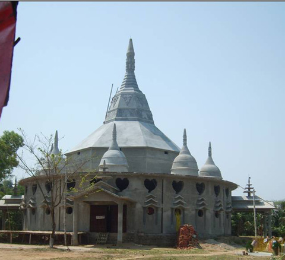
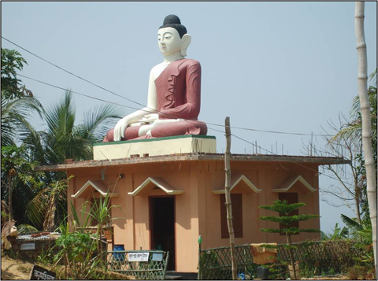

আলুটিলা পর্যটন কেন্দ্রের কয়েক শত গজ সামনেই এই বৌদ্ধ মন্দিরটি অবস্থিত। মন্দিরের নাম আলোক নবগ্রহ ধাতু চৈত্য বৌদ্ধ বিহার। স্থাপত্য শিল্পের অনন্য নিদর্শন এই মন্দির। এই মন্দিরের অন্যমত আকর্ষণ হল।

পদ্মাসনে বসা বুদ্ধের একটি বিশাল মূর্তিসহ বিভিন্ন অবয়বে বেশ কয়েকটি মূর্তি। প্রতিবছর এখানে কঠিন চীবর দান অনুষ্ঠান অত্যন্ত জাঁকজমকপূর্ণভাবে অনুষ্ঠিত হয়-যা পর্যটকদের নিকট অতি আকর্ষণীয়।